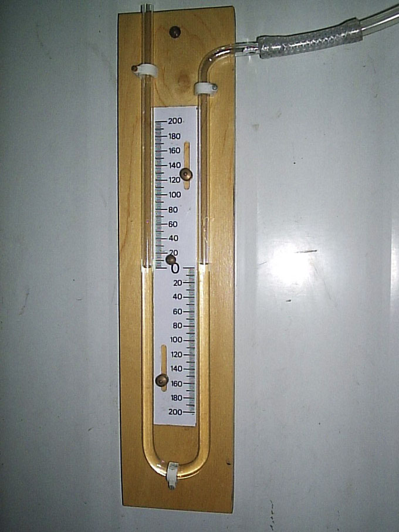

Diagnose a heating-water loop from command, proof and trend
Use flow, differential pressure and supply/return temperatures to distinguish a closed valve, a pump problem and a scaling fault.
Follow the water path before reading the dashboard
Mark pump, supply pipe, load coil, valve and return pipe on an approved drawing or on a detached trainer. Mark the sensor locations. A pressure reading across the pump serves a different purpose from pressure at a remote branch. An open command and actuator feedback still leave open questions about stem travel and flow. Use the synthetic cases below or a supervised training rig. Leave pressurised piping and electrical plant under the site procedure.
Use a single clock and units. Start with a steady example of 52 °C supply, 44 °C return and 0.50 L/s water flow. For water near this range, use roughly 1 kg/L and 4.18 kJ/(kg·K). Heat transfer is about 16.7 kW. Check sensor placement and fluid mixture before treating this estimate as a calibrated energy reading.

Photo by Neurotronix, with on-page callouts. Original photo · CC BY-SA 4.0.


Photo by Harold2013, Wikimedia thumbnail, with on-page callouts. Original photo · CC0.

See a physical run-proof device and its role in field commissioning.
Interpret three timing patterns
| Run | Synthetic evidence | Next discriminating check |
|---|---|---|
| A | Pump proof true; branch pressure healthy; valve command goes 20% to 80%; position stays near 20%; flow stays at 0.15 L/s. | On the approved trainer, compare command signal and physical stroke before investigating the pump. |
| B | Several branches lose flow as remote differential pressure falls; pump command remains high and run proof drops. | Compare pump status at drive and independent proof. Confirm whether the DP reading matches a documented measurement. |
| C | Independent temperatures are steady at 52 and 44 °C; trend shows return abruptly at 440 °C after an integration change. | Compare raw controller point, BACnet object and display units before adjusting any mechanical device. |
For each case keep the first measurable deviation, a competing explanation, the follow-up reading and the handover action. Show what is restored after a witnessed test. For the field hardware use P77 · Find a fault in a duct pressure measurement, P78 · Prove a heating or cooling valve moves and flows and P81 · Check a commercial power meter reading.
Related lesson and source material
T56 · Building control sequences, command priorities and point quality.